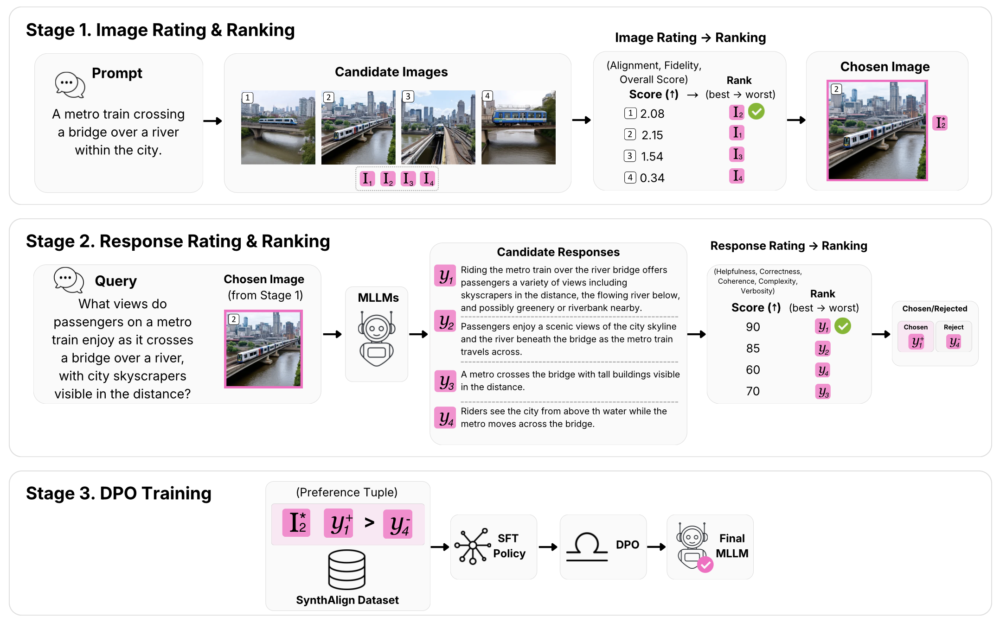
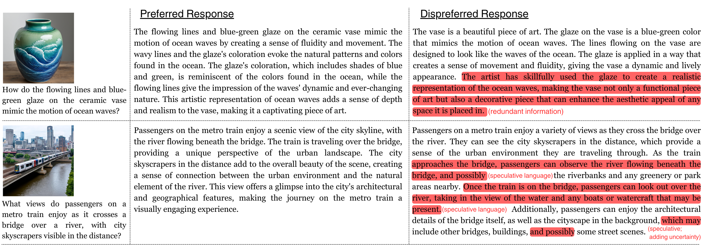
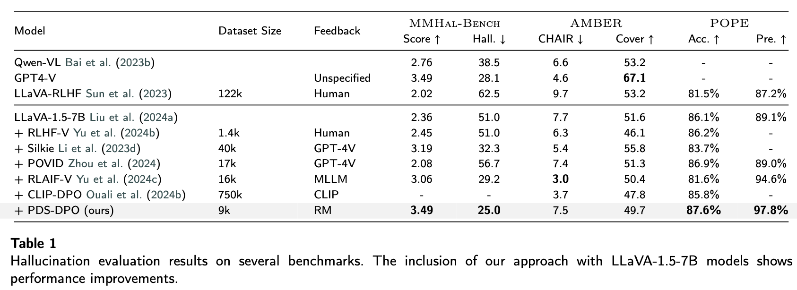
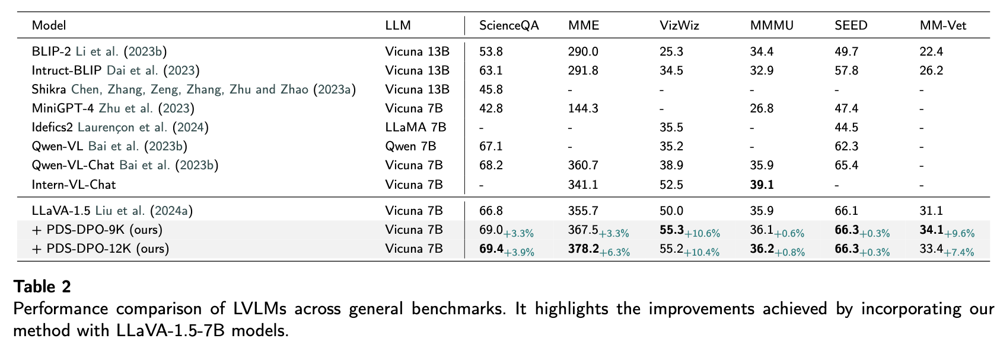
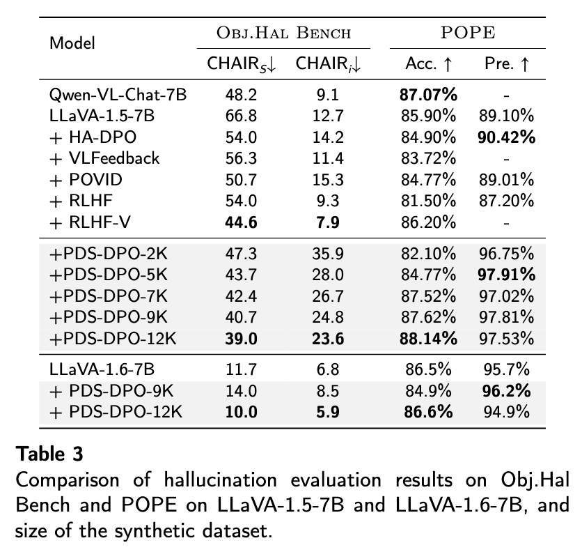
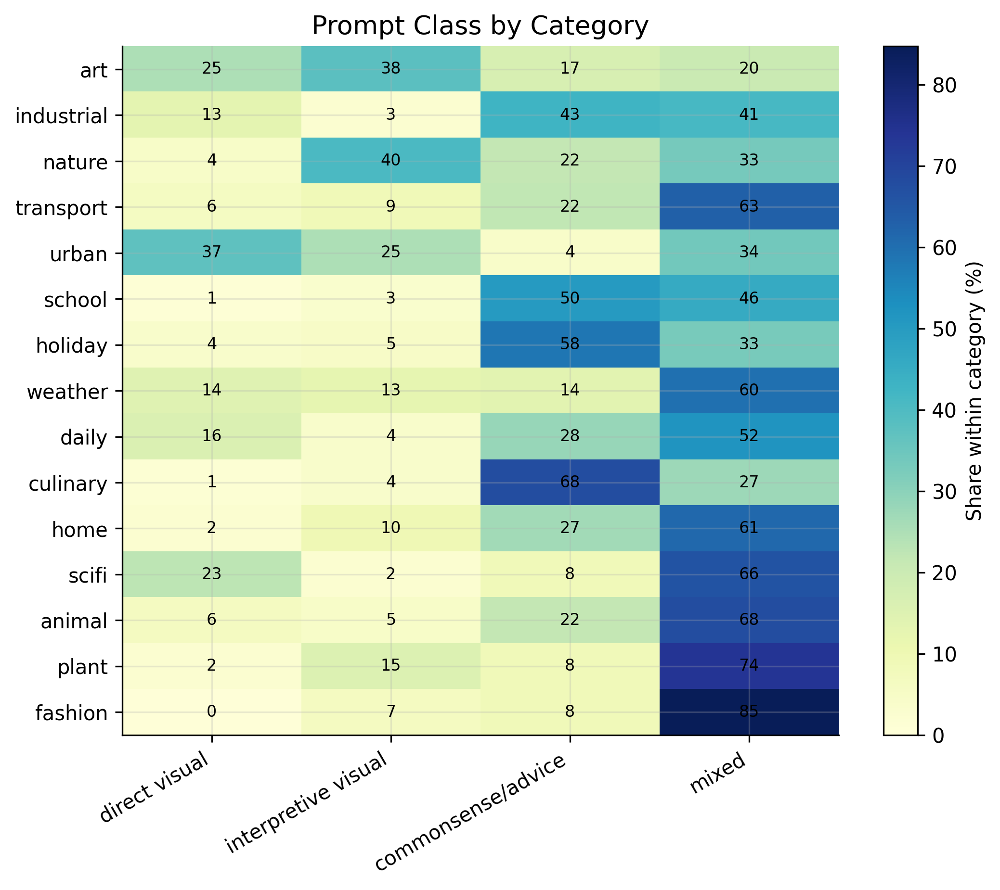
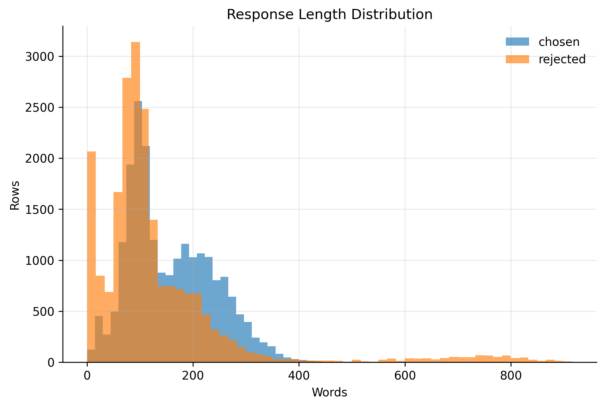
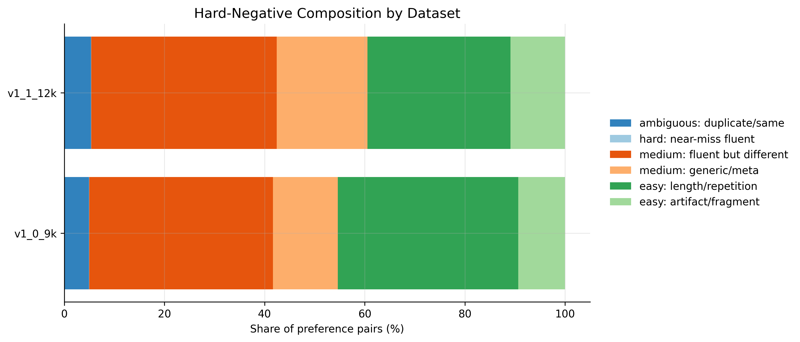

- 2025-11: The arXiv paper was updated as Synth-Align: Improving Trustworthiness in Vision-Language Model with Synthetic Preference Data Alignment.
- 2025-04: The dataset release was expanded with additional synthetic preference data, new categories, and improved quality responses.
- 2024-12: Initial paper, code, model weights, and synthetic preference dataset were released.
PDS-DPO
Multimodal Preference Data Synthetic Alignment with Reward Model
Updates
Abstract
Large Vision-Language Models (LVLMs) have shown promising capabilities in understanding and generating information by integrating both visual and textual data. However, current models are still prone to hallucinations, which degrade the performance and greatly harm the user experience in real-world applications. Post-training alignment, particularly preference-tuning, is intended to align model outputs and behaviors (safety, instruction-following, style), ensuring robustness and adaptability to a wide range of tasks. The use of synthetic data for alignment, particularly in multimodal settings, remains under explored. Existing approaches typically use a strong model or a ground-truth model (CLIP) to determine positive and negative image-text data points. This paper proposes a systematic pipeline to generate and collect synthetic human-preference image-text data with optimal control built specifically for post-training alignment with DPO. At the core of the framework is the utilization of reward models as a proxy of human preference. A series of evaluation and benchmarking is provided to validate the effectiveness of the proposed framework and the resulting dataset. Notably, our framework enhanced LLaVA-1.5-7B achieved substantial POPE improvements: 87.6\% accuracy and 97.8\% precision, MMHal-Bench score increased from 2.36 to 3.49, and hallucination rate decreased from 51.0\% to 25.0\% (a 50.98\% relative reduction).
Dataset and Resources
The released data contains image paths, instruction prompts, chosen responses, and rejected responses for multimodal preference alignment. The Hugging Face release provides JSON-formatted preference pairs and a combined dataset viewer, while the paper evaluates controlled subsets ranging from small-scale data to the expanded release.
Preference Format
Each example contains a visual prompt, a preferred response, and a dispreferred response, making it directly usable for DPO-style post-training.
Compact Alignment
The dataset is designed to test whether a relatively small amount of carefully selected synthetic preference data can change LVLM behavior.
Open Resources
Code, model checkpoints, and the dataset are released to support reproducible synthetic-preference alignment experiments.
Method
The proposed PDS-DPO framework:

Highlights
Our framework generates multiple images using Stable Diffusion and retains only the one with the highest scalar score as determined by the reward model:

Similar to the images, we rank the generated responses from open-source MLLMs and retain only the one that is preferred:

Competitive results on hallucination, general vision-language, and synthetic data scaling benchmarks:



Dataset Analysis
Additional diagnostics help characterize the synthetic preference data beyond benchmark scores. The plots summarize how prompt grounding varies by category, how often rejected responses are short or low-quality, and how response length differs between chosen and rejected outputs.



Citation
@article{wijaya2024multimodal,
title={Multimodal Preference Data Synthetic Alignment with Reward Model},
author={Wijaya, Robert and Nguyen, Ngoc-Bao and Cheung, Ngai-Man},
journal={arXiv preprint arXiv:2412.17417},
year={2024}
}